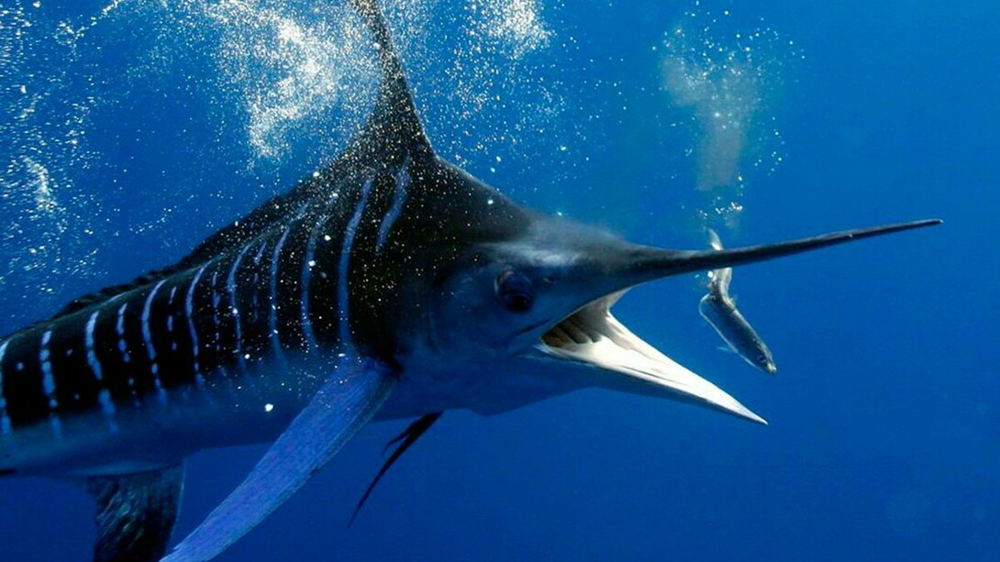

Pez Espada
Pez Espada

El pez espada habita en todos los océanos, aunque prefiere aguas templadas como las del mar mediterráneo y el mar negro.
Durante el día el pez espada se encuentra en las profundidades entre 500 y 800 metros,
pero al llegar la noche sube a la superficie.
Características:
- Se trata de un pez grande, pues mide de 3 hasta 4,55 metros de longitud y pesa alrededor de 650 kilogramos.
- La hembra es más larga que el macho y más longeva.
- Los individuos del norte del océano Pacífico alcanzan una longitud mayor que los del océano Atlántico y el mar Mediterráneo.
- Su cuerpo es cilíndrico y se estrecha hacia la punta.
- El adulto no tiene escamas, solo aquel que mide menos de 1 metro de longitud cuenta con pequeñas espinas.
Regresar al Inicio